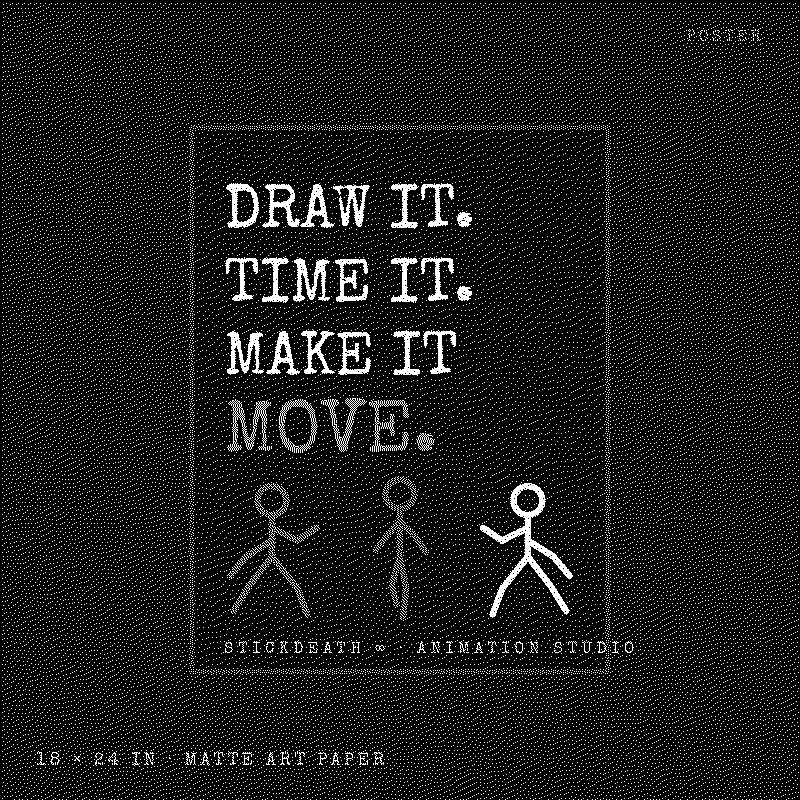

Pick a sound. All CC0, straight from the app's library.
Credits are shown per sound; the full catalogue is on the attribution page.
Real captures from the simulator journeys (source 39f29cb). Pick one.
A desktop you can play in.
StickDeath Infinity is a frame-by-frame animation studio for iPhone. This desktop is a toy built from the real thing: the flipbook, captures and clips come from the app and its test journeys, the jukebox plays sounds from the app's own CC0 library.
Drag windows by their title bars. Press Escape to close the front window. Nothing here is tracked or stored.